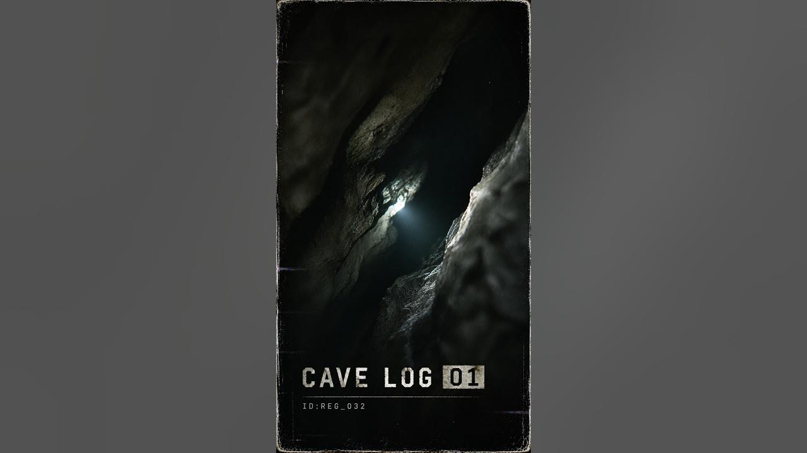
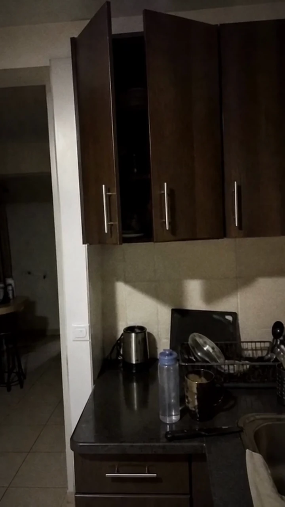
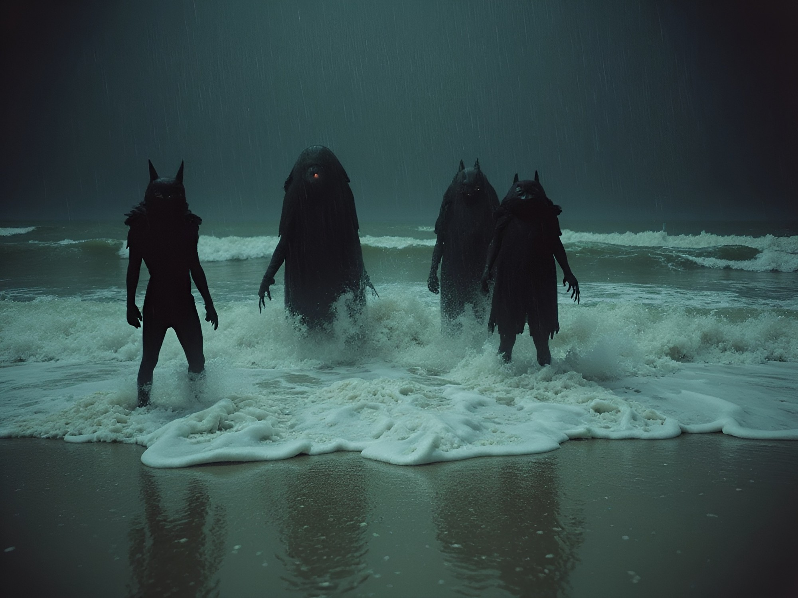

Horror / Found Footage / Worldbuilding
An interconnected horror universe exploring found-footage aesthetics, unsettling environments and visual mythology.
PROJECT FOCUS
Horror · Found footage · Worldbuilding
WATCH THE WORK
AI found-footage horror

Horror
Dashcam horror

Found-footage horror
